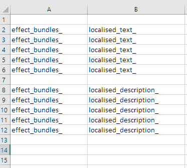
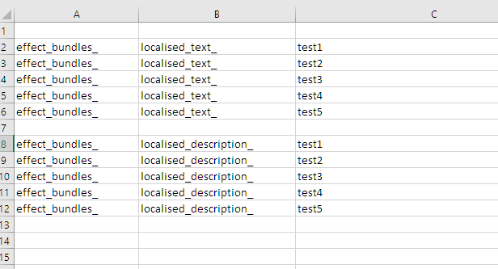
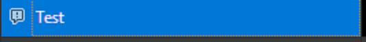
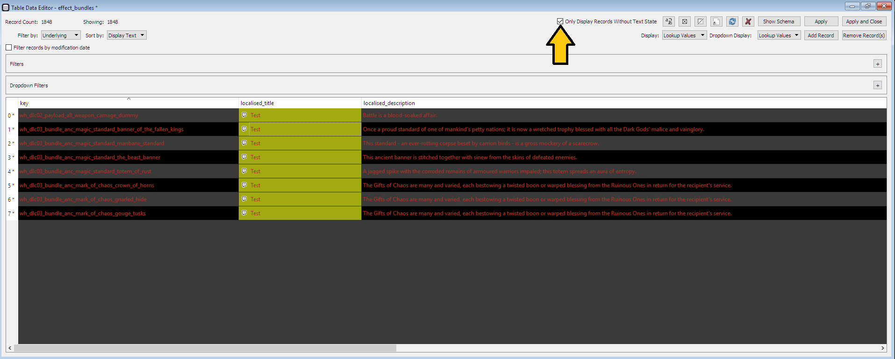
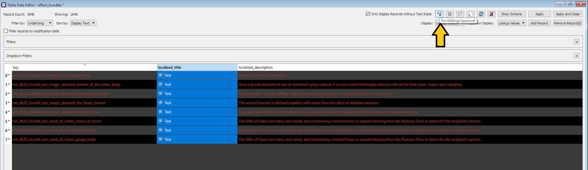

Localisation
By Vandy
Hello and welcome! Look no further for a simple tutorial to create custom text in Total War!
PLEASE NOTE: This tutorial assume basic knowledge of PackFiles, the modding tools available, and other basic nomenclature regarding modding.
Firstly, yes - obviously, custom text is possible, otherwise I wouldn’t have typed these words into this internet. Text in-game is known as localisation, and consists of basically all text you see - from the Help Pages, to building names, to mission text, to subtitles in quest battles - all of these are localisable text, meaning we can edit or add text.
There are two ways to edit and add text, and I'll show them both in turn. While the PackFile editing method is probably the one most will use - and the one I recommend - we'll go over both. Assembly Kit Localisation is good to know just for visualization, and it will help me teach your how to use it in the PackFile, so please read on!
AK Localisation
Making new localisation in the Assembly Kit is remarkably simple. All you have to do is find the columns with the localisation you want to add, fill in the text, apply your changes. After using Export -> Export Changes to Binary, close DaVE and open up BoB. Within BoB, use the Retail Pack option, and boom, your localisation files are done!
One BIG thing to note here: just like exporting db in the Assembly Kit, it has all records within that .loc file, not just the ones you've edited. This is real bad for compatibility, so you should know how to directly edit the .loc file. Read on!
WARHAMMER II USERS: At the date of this publication (July 3, 2019), the Localisation feature of the retail AK for WH2 is disabled. To enable it (which is really easy), check out the bottom section, way down below..
PackFile Localisation
You can either copy over a .loc file, thieved from either a CA retail pack or something exported from AK like above, or create a new one from scratch. The former can be done either with the Add -> Add from Packfile action in RPFM, or just "Add File", whereas created a new one can be done with the Create -> Create Loc action. Make sure the path for the .loc file is in .pack/text/db/.
However you do it, you'll get something like the following picture, with three columns: Key, Text, and It Doesn't Really Matter, Just Set It To True.

With some understanding of how AK Localisation works, this is rather simple. First thing's first - the Text column is the text that shows up in-game. That's all I'm gonna say about it for now, though I'll go over some extra things we can do with localisation later on.
The Key is the important part. It is composed of three separate parts - the table, the column within the table, and the key of the db object.
tablename_columname_key
We can see in the image above, all of them start with effect_bundles, which is a reference to the db table.
After that, all of them have either localised_text or localised_description. These are the two columns we can see in the Assembly Kit for the effect_bundles table. Some tables have only one localisable field, some have many - just check the Assembly Kit or existing .loc files for what those are and what they're used for.
The last one is the db key. For example, if we look up wh_main_payload_disaster_flood_region in the effect_bundles table in the Assembly Kit, we can see it's an actual key used in that table:

For the case of the flood_region effect bundle, we can see it broken down into the three parts.
First, there's the table name: effect_bundles_
Then, there's the column name: localised_text_
Then, the key: wh_main_payload_disaster_flood_region
The three of those link up to make effect_bundles_localised_text_wh_main_payload_disaster_flood_region, which links to the text "Flooding" within the effect_bundles__.loc file!
That's all there really is to localisation! You can add new rows in a .loc file, set the Key properly and the Text will show up.
When doing PackFile Localisation, you need to keep a handful of things in mind:
- The name of your .loc file needs to be different than the vanilla .loc file, and a higher alphanumerical priority. If the vanilla .loc file is called
effect_bundles__.loc, call yours something like!mod_name_effect_bundles.loc. You can really call it whatever, like!yay_I_made_a_mod.loc. - You can divide the .loc files up by table, like they are in vanilla - or you can have them all in one big .loc file. It's up to you!
- The .loc files need to be in the folder structure
./pack/text/db.
Excelling at Localisation
If you have Excel, or another data program, it's incredibly easy to automate localisation. I used to type every single loc key, until one day I decided to start concatenating, and it's reduced time spent tremendously. Continuing with the same example above, I would set up a new worksheet with the following:

Column A, the table key, Column B the db column key. Column C will be filled out with db keys (normally, copied from RPFM or the AK).

In Column D, I set up a concatenation formula to combine columns A, B, and C.


At that point, copy the D2 function, and paste it for the rest of the rows.

And that's it. Copy the stuff you want to export, and paste it into a .loc file within RPFM.
Common Pitfalls
It doesn't work! Here are some common mistakes with localisation:
- Misnomer: Double, triple, and double check your spelling.
- Underscore: Make sure every bit of a loc key is split by an underscore. There should be one between table and column, and another between column and key.
- The Final Frontier: Make sure there are no spaces in the loc key.
- Combo keys: common case localizing building_culture_variants, you have to include any culture/subculture/faction key you have in the building's line, in that order, whenever present. Analogous to how UITR work (below).
- Who Knows?: Sometimes it just doesn't work. If nothing else, try remaking it from scratch.
Localisation Options
There are a couple of cool things we can put in the localised text, such as colored text, or images. I'll go over the most common ones here:
VALUE
You'll see in the effects table %+n. This is a wildcard that replaces itself with whatever the value in the value column is, when that effect is linked to an effect bundle or building or skill or what-have-you. So if the effect's text is something like "This increases something by %+n", and the value in effect_bundle_to_effects is 5, it'll read "This increases something by 5".
COLOURS
If you'd like to make coloured text, you can wrap text with [[col:col_key]] %text% [[/col]]. You can find the keys in the table ui_colours. I don't believe it's possible to setup new colours, but I haven't tried.
I am told there is also used, somewhere, the following format: [[rgba:91:30:0:255]] text [[/rgba:91:30:0:255]], for red green blue alpha. If you find this works, please confirm with me!
TAGGED IMAGES
You can make little cute images within a localised text. For exmaple, there are icons often in help pages before keywords. All you have to do is use the following tags: [[img:img_key]][[/img]]. You can find the keys in the table ui_tagged_images. You can make new images!
PARAGRAPHS
You can make a line break with \n. Use it sparingly, it won't work in most locations, but works fine for things like missions, events, loading screen quotes. I recommend checking vanilla application before using it.
There is also a CA shorthand for creaking line breaks on UI components, ||. I'm not perfectly familiar with when this should or shouldn't be used, but I've seen it for things such as: occupation options, frontend text, loading screen quotes, and most commonly, UI localisations. Test as you wish to see it work or not, and check with vanilla.
UI TEXT REPLACEMENTS
UI Text Replacements (uitr, henceforth) are awesome lil' buggers to help you from typing the same thing over and over again. You can refer to a uitr with the tag {{tr:tr_key}}. You can find keys with the table ui_text_replacements. New ones are doable! Just make a new key in the table, and make a new row in a .loc file.
One great application is to prevent typing the same thing over and over again, and instead refer to the same text replacement. You can define one and refer to it within various different localised fields.
A greater application is to allow the same text to show differently between different factions. For instance, the text for money shows up as 'Treasury' for most factions, and 'Dark Magic' for Vampire Counts, in WH2.

There's an extra suffix to some uitr loc keys, which can refer to subcultures. In this above example, the treasury header text changes for Beastmen/Chaos/Vampire Counts, and it's read automatically. All you have to do is add a new row in the db file and the .loc file!

Addendum: Warhammer II Assembly Kit Localisation
First things first, get this file. Take it, and move it to: steam/steamapps/common/Total War WARHAMMER II/assembly_kit/raw_data/db, overwrite the existing file.
That will enable localisation. There's a small and slightly annoying thing that must be done to get around it. When you edit a localisable field, you'll get a small little exclamation to the left of the text like this:

If that exclamation is there, any changes won't be exported. To filter out all unchanged text, press the checkbox marked Only Display Records Without Text State in the top right.

Now that we have only our edited cells, highlight all of them - ONLY the localisation spots - and press the For Editing/Approval button on the top right, which is right next to the checkbox we just used.

After doing so, they should vanish from the filter for Only Display Records Without Text State, and will export properly! And that's all!
Summary
Get out there and get localising. I don't have much more to say here.